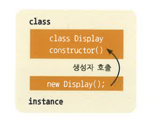

자바스크립트에서도 정식 클래스(class) 문이 추가되었다. 이제 prototype을 사용하지 않고도 좀 더 간단하고 명료하게 상속을 사용할 수 있게 되었고, 정적(static) 함수 선언문이 추가되었다.
참고) static 키워드는 변수나 함수, 클래스에 정적 속성을 부여하는 것으로 클래스로부터 객체를 생성하지 않고 변수나 함수를 호출할 수 있도록 해주는 것이다. 변수이름의 형식으로 곧바로 사용할 수 있게 된다. static 키워드를 사용하는 이유는 자주 변하지 않는 일정한 값이나 설정 정보 같은 공용자원에 대한 접근에 있어서 매번 메모리에 로딩하거나 값을 읽어들이는 것보다 일종의 전역변수와 같은 개념을 통해서 접근하는 것이 비용도 줄이고 효율도 높일 수 있다. (4번에서 자세히 설명)
클래스는 미리 선언해 두었다가 클래스 선언문의 이름 앞에 new 키워드를 붙여 호출하여 인스턴스를 생성하여 사용하는 것이 기본이며, 이때 클래스 안의 this 키워드는 생성된 인스턴스를 참조한다.
- 클래스의 선언 방법은 class 키워드 뒤에 클래스 명을 붙여 선언해 주고 블록 안쪽에 구문을 작성해 준다. 아래 클래스 선언의 예를 살펴보면 Display 클래스를 선언하고 new 키워드를 붙여 Display 클래스를 호출하여 변수 display에 인스턴스를 참조하였다.
class Display{ // Display 클래스 선언
}
// 선언된 Display 클래스에 new 키워드를 붙여 호출하여 새 이스턴스 생성
const display = new Display();
- 생성자 함수(constructor)는 클래스의 인스턴스 생성 시에 한번 호출되는 함수이며, 내부 구문에 의해서는 호출할 수 없다. 주로 초기 설정의 목적으로 사용되며 인스턴스 호출 시 전달한 인자값이 생성자 함수 매개변수에 전달된다.
- 생성자 함수는 클래스 블록 안에 선언해 주며 constructor 키워드를 사용하여 선언하되 function은 붙아지 않는다.

- 아래 생성자 함수 선언 예를 살표보면, Display 클래스를 선언하고, 생성자 함수(constructor)를 클래스 내부에 선언해 주었다. 선언된 클래스를 호출하면서 인자값을 전달해 주었고, 전달된 인자는 생성자 함수 매개 변수에 전달되었음을 볼 수 있다.
class Display{
constructor(x, y){ // 생성자 함수 선언
// 전달인자의 값을 클래스 멤버 변수에 할당
this.x = x;
this.y = y;
console.log(this.x, this.y); // 결과는 100, 200
}
}
const display = new Display(100, 200);
- 프로토타입(prototype) 메서드는 인스턴스를 통해서 호출 가능한 함수이다. ECMAScript 이전에는 함수의 prototype 속성에 함수를 추가하여 메서드를 구현하였다. 이 방식은 코드의 가독성이 떨어져 클래스 선언문에 바로 프로토타입 메서드를 선언할 수 있도록 개선되었다.
- 프로토타입 메서드의 선언 방법은 클래스 선언문 블록 내부에 함수를 선언하되, function은 붙아지 않는다.
var Display = function(){
}
Display.prototype.foo = function(){
}
class Display{
foo(){
}
}
- 다음 코드의 예를 살펴보면 Display 클래스 선언문 안에 foo 메서드를 선언해 주고, Display 클래스의 인스턴스를 생성해 주었다. 생성된 인스턴스를 통해 foo 메서드를 호출할 수 있음을 볼 수 있다. 이때 this 키워드는 생성된 인스턴스를 참조한다.
class Display{ // Display 클래스 선언
foo(){ // foo 메서드 선언
console.log(this); // this출력
}
}
const display = new Display(); // Display 클래스 인스턴스 생성
display.foo(); // foo 메서드 호출, 출력된 this는 생성된 인스턴스를 참조
- 정적(static) 메서드는 프로토타입 메서드와는 다르게 인스턴스를 통해서가 아닌 클래스 이름 뒤에 바로 메서드 호출을 하며 주로 유틸 함수를 정의할 때 사용된다. static 메서드는 클래스 내부에 static 키워드를 앞에 붙여 메서드를 정의해 준다.
- 다음 코드의 예를 살펴보면 Display 클래스 선언문 안에 static foo 메서드를 선언해 주고, 인스턴스 생성없이 클래스명 바로 뒤에 static 메서드를 호출해 주고 있다. 이때 this 키워드의 값은 프로토타입 메서드와는 다르게 인스턴스를 참조하지 않고 undefined가 된다.
실행 : http://127.0.0.1:8887/ex06_06.html (실행하면 자기 자신 클래스가 한 번 출력됨)
class Display{ // Display 클래스 선언
static foo(){ // static foo 메서드 선언
console.log(this); // this출력
}
}
Display.foo(); // static foo 메서드 호출, 출력된 this는 undefined
- 자바스크립트에서의 상속은 prototype chain 매커니즘을 활용해야 한다. ECMAScript 이전에는 이를 직접 구현해주어야 한다. 부모 클래스의 인스턴스를 생성하여 자식 클래스의 prototype 속성에 참조한다.
- 다음 코드 예를 살펴보면 Parent 함수의 인스턴스를 생성하고 Child 함수의 prototype 속성에 참조한다. 그럼 Child 함수의 인스턴스를 통한 메서드 호출 시 Parent 함수의 프로토타입 메서드를 호출할 수 있으며, Parent와 동일이름의 prototype을 Child에 추가 시 우선 순위로 Child의 메서드가 호출된다. 이를 'prototype chain'이라고 한다.
var Parent = function(){} // Parent 함수 선언
Parent.prototype.foo = function(){ // Parent 함수의 prototype foo 함수 선언
console.log('foo');
}
var Child = function(){} // Child 함수 선언
var parent = new Parent(); // Parent 함수의 인스턴스 생성
Child.prototype = parent; // Child 함수의 prototype 속성에 Parent 함수 인스턴스 참조
var child = new Child(); // Child 함수 인스턴스 생성
child.foo(); // Child 인스턴스에서 Parent 메서드 호출
- 위의 상속법은 ES6 이전의 방법이다. 좀 더 완벽한 구현을 위해서는 코드가 추가되어야 하는데, 매우 복잡하고 가독성이 떨어진다. ES6의 클래스는 extends 키워드를 사용하여 보다 쉽게 상속을 구현할 수 있다. 클래스 선언문에 extends 키워드를 붙이고, 뒤에 상속 받을 클래스명을 작성한다.
- 다음 코드 예를 살펴보면 선언된 Display 클래스를 Rect 클래스 선언문 뒤에 extends 붙여 Display 클래스를 상속받고 있다. 코드가 매우 간결하고 가독성이 뛰어나졌다.
실행 : http://127.0.0.1:8887/ex06_08.html (실행 X : 오류발생)
class Display { // Display 클래스 선언
constructor() {
}
}
class Rect extends Display { // Display 클래스를 상속받는 Rect 클래스 선언
constructor() {
}
}
const rect = new Rect(); // rect 인스턴스 생성
- 그런데 인스턴스 생성 시 오류가 발생한다. 원인은 자식 클래스 생성자 호출 시 super 함수를 호출하지 않아서이다. 여기서 super란 부모 클래스의 생성자인데, 자식 클래스에서 생성자 호출 시 부모 클래스가 초기화 되도록 강제적으로 super를 호출하도록 하는 것이다.
- 다음과 같이 코드를 수정해야 정상적으로 동작할 것이다.
class Display { // Display 클래스 선언
constructor(x, y) {
this.x = x;
this.y = y;
}
}
class Rect extends Display { // Display 클래스를 상속받는 Rect 클래스 선언
constructor(x, y, width, height) {
super(x, y); // 부모 클래스의 생성자함수 호출
this.width = width;
this.height = height;
}
}
- 자식 클래스의 메서드에서는 super 키워드를 통해서 부모 클래스의 메서드를 호출할 수 있도록 해준다. 곧 super 키워드는 부모 클래스의 인스턴스라고 볼 수 있는데 오로지 프로토타입 메서드만 호출이 가능하다.
- 다음 코드를 살펴보면 Display 클래스를 상속받은 Rect 클래스에서 logScale 프로토타입 메서드를 선언하고, super 키워드를 통해 부모 클래스의 logPosition 프로토타입 메서드를 호출하고 있다.
class Display { // Display 클래스 선언
constructor(x, y) {
this.x = x;
this.y = y;
}
logPosition(){
console.log(this.x, this.y);
}
}
class Rect extends Display { // Display 클래스를 상속받는 Rect 클래스 선언
constructor(x, y, width, height) {
super(x, y); // 부모 클래스의 생성자함수 호출
this.width = width;
this.height = height;
}
logScale(){
console.log(this.width, this.height);
super.logPosition(); // super 키워드를 통해 부모 클래스의 logPosition 메서드 호출
}
}
- 메서드 오버라이딩이란 부모 클래스의 메서드를 재정의하는 것이다. 이것은 ECMAScript 이전에 사용되었던 프로토타입 체이닝을 대신해 준다. 상속받은 클래스의 메서드 호출 시 자식 클래스의 메서드 목록을 우선으로 찾아 호출해주며, 없을 경우 부모 크래스의 메서드를 조회하여 호출해 준다.
- 다음 코드의 예를 살펴보면 부모 클래스 logPosition 메서드를 자식 클래스에서 재정의하여 메서드 오버라딩을 하였다. 자식 클래스의 인스턴스 생성 후 logPosition 메서드를 호출하면 부모 클래스의 메서드가 아닌 자식 클래스의 메서드가 호출되는 것을 볼 수 있고, super 키워드를 통해 부모 메서드의 호출이 가능한 것을 볼 수 있다.
class Display { // Display 클래스 선언
constructor(x, y) {
this.x = x;
this.y = y;
}
logPosition(){
console.log(this.x, this.y);
}
}
class Rect extends Display { // Display 클래스 상속
constructor(x, y, width, height) {
super(x, y);
this.width = width;
this.height = height;
}
logPosition(){ // 메서드 오버라이딩
console.log('메서드 오버라이딩');
super.logPosition(); // 부모 클래스 logPosition 메서드 호출
}
}
const rect = new Rect(10, 20, 100, 200); // Rect 클래스 인스턴스 생성
// logPosition 메서드 호출
// 결과는 자식클래스의 메서드가 호출 '메서드 오버라이딩' 출력
// 자식 클래스에서 부모 클래스 메서드 호출 10, 20 출력
rect.logPosition();
- 이번 장에서는 클래스에 대해서 살펴보았다. 다음은 기존 방식과 ES6의 클래스를 비교하여 정리한 표이다.
| 기존 방식 | class | |
|---|---|---|
| prototype 메서드 | 함수 prototype 속성에 추가하여 사용한다. 매번 prototype 키워드를 작성해야 하는 번거로움이 있고, 어떤 위치나 메서드 추가 코드를 작성할 수 있어, 그룹화가 되지 않아 가독성이 떨어진다. |
class 블록 안에 prototype 키워드를 생략하고 작성하며, 메서드가 class 블록 안에 작성되므로 그룹화되어 가독성이 좋아진다. |
| 상속 | 자식 클래스의 prototype 속성이 부모 클래스의 인스턴스를 추가하여 구현한다. 추가로 부모 클래스의 초기화를 구현해 주어야 하고, 정해진 방식이 없어 구현 방식이 모두 다르며, 코드의 가독성이 매우 떨어진다. | 클래스 선언문 뒤에 extends 키워드를 붙여 상속한다. super 함수를 호출하여 부모 클래스를 간단하게 초기화 할 수 있고, 선언 방식이 정해져 있어 코드의 가독성이 좋아진다. |
- 먼저 다음 코드를 살펴보면, Animal 클래스가 선언되어 있고, Animal 클래스에는 eat와 sound 프로토타입 메서드가 선언되어 있다. 그 아래에는 Animal 클래스를 상속받는 Dog 클래스와 Tiger 클래스가 선언되었고, 각각 메서드를 오버라이딩하고 있다.
<!DOCTYPE html>
<html>
<head>
<title>클래스(Class)</title>
<script type="text/javascript">
var Animal = function(){};
Animal.prototype.eat = function(){
console.log('먹기');
}
Animal.prototype.sound = function(){
console.log('소리내기');
}
var Dog = function(){};
Dog.prototype = new Animal();
Dog.prototype.sound = function(){
console.log('멍멍');
}
Dog.prototype.eat = function(){
console.log('사료');
}
Dog.prototype.guard = function(){
console.log('집지키기');
}
var Tiger = function(){};
Tiger.prototype = new Animal();
Tiger.prototype.sound = function(){
console.log('어흥');
}
Tiger.prototype.eat = function(){
console.log('닭고기');
}
Tiger.prototype.attack = function(){
console.log('공격');
}
var dog = new Dog();
dog.sound();
var tiger = new Tiger();
tiger.sound();
</script>
</head>
<body>
</body>
</html>
- 작성된 코드를 브라우저의 개발도구 console에서 결과를 확인하면 Dog 클래스와 Tiger 클래스가 Animal 클래스의 메서드를 오버라딩되어 호출되었음을 볼 수 있다.
- 그럼 이제 위의 코드에서 인스턴스를 생성하는 호스트 코드를 유지한 채 클래스 선언 구문을 ES6의 class로 상속을 extends 키워드를 사용하여 변경해 본다.
ecma6\complete\chapter6\6-1\ex01.html | http://127.0.0.1:8887\chapter6\6-1/ex01.html
<!DOCTYPE html>
<html>
<head>
<title>클래스(Class)</title>
<script type="text/javascript">
class Animal{ // Animal을 class 선언문으로 변경해 준다.
constructor(){
}
eat(){ // prototype 메서드를 class 선언문 안에 prototype 키워드를 생략하고 선언
console.log('먹기');
}
sound(){
console.log('소리');
}
}
// 인스턴스를 prototype 속성에 붙여 상속 구현하던 구문을 extends 키워드를 사용하여 상속
class Dog extends Animal{
constructor(){
super(); // 부모 클래스 초기화 추가
}
sound(){ // 부모 클래스의 메서드 오버라딩
console.log('멍멍');
}
eat(){
console.log('사료');
}
guard(){ // phototype 메서드 추가
console.log('집지키기');
}
}
class Tiger extends Animal{
constructor(){
super();
}
sound(){
console.log('어흥');
}
eat(){
console.log('닭고기');
}
attack(){
console.log('사냥');
}
}
var dog = new Dog();
dog.sound();
var tiger = new Tiger();
tiger.sound();
</script>
</head>
<body>
</body>
</html>
- 수정한 코드를 살펴보면 선언된 함수를 class 선언문을 이용하여 보다 명확하게 class를 선언해 주고, prototype 메서드는 class 선언문 블록 안에 prototype 키워드를 생략하고 선언해 준다. 인스턴스를 prototype 속성에 추가하여 구현한 상속 구문은 extends 키워드를 사용하여 변경해준다.
- 모둘은 자바스크립트 코드의 재사용성을 높이는데 매우 도움이 된다. ES6이전에도 모듈화를 구현하기 위한 방법은 존재하였다. 특히 CommonJS와 AMD 라이브러리는 매우 범용적으로 사용되었으며, 지금도 지속적으로 연구되고 있다. 이러한 모듈의 주요 기능은 다음과 같다.
- ES6에서의 모듈은 기존 자바스크립트와 동일하지만 <script type="module">로 선언해주어야 하며, import와 export 키워드를 추가적으로 사용할 수 있다. 모듈은 자신만의 독립적인 scope를 가지며, 변수 또는 함수 등은 비공개 API로 선언된다.
- 그런데 모든 API가 비공개라면 코드를 재사용할 수가 없으므로 공개 API를 선언할 수 있어야 하는데, export 키워드를 앞에 붙이고 변수 또는 함수 등을 선언 시 공개 API로 선언된다.
- 모듈에서 다른 모듈의 공개 API를 사용하기 위해서는 먼저 모듈 로드가 선행되어야 한다. 모듈 로드는 import 키워드를 사용하여 로드할 파일 위치를 지정해 주고, 필요한 공개 API를 설정해줄 수 있다. 그럼 좀 더 자세히 import와 export 키워드를 살펴보자.
- 모듈에서 공개 API 선언 시 기본값을 선언해 줄 수 있다. export 키워드 뒤에 default 키워드를 추가해 주면 기본값으로 선언이 된다. 이렇게 내보낸 기본값은 import 키워드 뒤에 명명하여 불러올 수 있다.
- 다음 예를 살펴보면 먼저 module.js 파일을 생성하고 내보낼 기본값을 선언해 준다. export 키워드 뒤에 default 키워드를 붙이고 함수를 선언해 주었다. index.html에서 import 키워드 뒤에 불러온 API를 참조할 변수를 명명하고, 뒤에 from 키워드를 붙여주어 모듈파일의 위치를 지정하였다.
- moudule.js
export default function(){ // 기본값 내보내기에 함수를 선언
console.log('module import');
}
<script type="module"> import foo from './module.js'; // module.js 모듈을 불러오고 기본값을 foo 변수에 참조 foo(); // 결과는 'module import' 출력 </script>
- 모듈 내보내기 시 기명값을 참조할 수 있다. 미리 선언된 기명값을 참조하거나, export 키워드 뒤에 기명값을 선언하여 참조할 수 있다. export 키워드 뒤에 {} 안에 선언된 기명값을 넣어 참조하거나 export 뒤에 기명값을 선언할 수 있다. 내보낸 모듈을 import하여 {} 안에 내보낸 기명값을 같은 이름의 변수에 참조하여 API를 사용할 수 있다.
- 다음 예를 살펴보면 module.js 파일에 area 함수와 round 함수를 선언하고, export 키워드 뒤에 {} 안에 기명값을 참조하였다. index.html 파일에서 module.js 모듈을 불러와 {} 안에 같은 이름의 변수 선언하여 내보낸 기명값을 참조하였다.
- moudule.js
export {area, round} // area 함수와 round 함수 내보내기
let x = 10;
let y = 20;
function area(){return x*y;}
function round(){return (x+y)*2;}
<script type="module"> // module.js 모듈을 불러와 내보낸 기명값을 {}안에 같은 이름의 변수에 참조 import {area, round} from './module.js'; console.log(area()); // 결과는 200 console.log(round()); // 결과는 60 </script>
- 앞서 살펴본 기명값 사용 시 as 키워드를 붙여 별칭을 부여할 수 있다. as 키워드를 붙이고 뒤에 별칭을 명명한다.
- module.js 파일에서 변수 a1, a2를 기명값으로 내보내고, index.html 파일에서 module.js 모듈을 불러와 a1은 b1, a2는 b2로 별칭을 부여하였다.
- moudule.js
export {a1, a2}; // a1, a2 기명값 내보내기
var a1, a2;
<script type="module"> // a1-> b1, a2->b2로 별칭을 부여하여 참조 import {a1 as b1, a2 as b2} from './module.js'; </script>
- module.js 파일에서 기본값과 변수 a를 기명값으로 내보내고, index.html 파일에서 module.js 모듈을 불러와 기본값은 def로 a는 b로 별칭을 부여하였다.
- moudule.js (책은 오타)
export default{}; // 기본값 내보내기
export let a = 100; // 기명값 내보내기
<script type="module"> // 기본값은 def, a는 b로 별칭을 부여 import def, {a as b} from './module.js'; </script>
- 앞서 살펴본 모듈 공개 API는 각각 개별키에 참조하여 하나씩 할당해 주었다. *키워드를 사용하면 개별이 아닌 한꺼번에 API를 불러올 수 있다. 이때 *키워드는 뒤에 as 키워드를 붙여 별칭을 부여해 주어야 하고, 명명된 키에는 공개 API Module 객체의 속성에 참조된다.
- 다음 예를 살펴보면 module.js 파일에서 기본값과 a, b 기명값을 내보내고, index.html 파일에서 module.js 모듈을 불러와 *키워드를 사용하여 전체 공개 API를 module 변수에 참조하였다. 출력된 module 변수는 Module 객체를 참조하여, 속성으로 공개 API 전부를 참조하고 있음을 볼 수 있다.
참고) 키워드는? all 이라는 뜻이다.
- moudule.js
export default class{}; // 기본값 내보내기
export {a, b}; // 기명값 내보내기
var a = 100;
var b = 200;
<script type="module"> // 모든 공개 API를 module 변수에 참조 import * as module from './module.js'; // 결과는 Module 객체( {a: 100, b: 200, default: class} ) 출력 console.log(module); </script>
- 다음은 모듈 사용 시 장점을 정리한 표이다.
| 모듈 사용 시 장점 | |
|---|---|
| 독립적인 실행영역(scope) 생성 | 모듈을 사용하면 자동으로 독립적인 실행영역(scope)을 만들어 주므로, 이를 위해 별도의 노력을 기울이지 않아도 되며 작업 시간을 단축시킬 수 있고 외부 라이브러리나 불필요한 코드를 작성하지 않아도 된다. |
| 비동기 로드 | 모듈은 재사용이 쉽도록 미리 작성해 두었다가 필요할 때 로드하여 사용할 수 있어 생산성을 높여 줄 수 있다. |
- 모듈화하기 전에 작성된 예제를 살펴보면 Loader 클래스에서 JSON 데이터를 로드하여 body에 데이터를 출력하도록 작성되어 있다. ex01.html 파일에서 Loader 클래스가 작성된 loader.js 파일을 불러놓고, Loader 클래스의 load 메서드를 호출하면 전달 인자 url에 위치한 파일을 로드하여 응답 데이터를 전달받도록 수행해준다. 코드를 보면서 좀 더 자세히 살펴보면
- 다음 코드는 body에 노출시킬 JSON 데이터이다. success 속성의 값을 읽어오고 있다.
{
"success":"성공"
}
- 다음 파일은 Loader 클래스이다. Loader 클래스 인스턴스에 load 메서드를 호출하여 전달인자인 url 값에 위치한 파일의 data를 불러와 이를 콜백 전달해 주고 있다.
class Loader { // Loader 클래스 선언 constuctor(){ } // 인수에 데이터 경로와 데이터를 전달받을 콜백을 전달받음 load({url, callback}){ const promise = new Promise((resolve, reject)=>{ let req = new XMLHttpRequest(); req.open('GET', url); req.send(); req.onreadystatechange = ()=>{ if(req.readyState == req.DONE){ if(req.status == 200){ // 데이터를 불러오면 콜백함수에 데이터 전달 callback.call(this, req.response); } else { console.log(req.statusText); } } } }); } }
- 다음 코드는 Loader 클래스를 불러와 인스턴스를 생성한 뒤 데이터를 불러오도록 load 메서드를 호출하여 전달받은 데이터를 body에 출력하도록 한다.
<!DOCTYPE html> <html> <head> <title>모듈(Module)</title> <script type="text/javascript" src="./js/loader.js"></script> <script type="text/javascript"> const loader = new Loader(); // Loader 클래스 인스턴스 선언 loader.load({ // 데이터 로드를 수행하도록 메서드 호출 url:'./data/data.json', callback:function(data){ // data 인수에 데이터를 전달받음 // body에 데이터의 success 속성값을 출력 document.body.innerHTML = JSON.parse(data).success; } }); </script> </head> <body> </body> </html>
- 작성된 예를 실행해 보면 다음과 같은 결과가 출력된다.
- 위에서 살펴본 예제의 Loader 클래스는 모듈화가 되어있지 않아, 비동기로 불러와 사용할 수 없다. 이를 모듈화하여 index.html 파일에서 모듈을 불러와 위와 같은 동작을 하도록 수정해보자.
- 먼저 Loader 클래스를 모듈화 시켜 보도록 하자. export 키워드를 추가하여 모듈 보내기를 하여 비동기로 모듈을 불러올 수 있도록 변경한다. 이때 모듈 기본값이 되도록 default 키워드를 추가해 주었다.
ecma6\complete\chapter6\6-2\js\loader.js | http://127.0.0.1:8887/chapter6/6-2/js/loader.js
export default class { // Loader 클래스 선언 constuctor(){ } // 인수에 데이터 경로와 데이터를 전달받을 콜백을 전달받음 load({url, callback}){ const promise = new Promise((resolve, reject)=>{ let req = new XMLHttpRequest(); req.open('GET', url); req.send(); req.onreadystatechange = ()=>{ if(req.readyState == req.DONE){ if(req.status == 200){ // 데이터를 불러오면 콜백함수에 데이터 전달 callback.call(this, req.response); } else { console.log(req.statusText); } } } }); } }
- 다음은 모듈을 불러올 수 있도록 index.html 파일을 수정해 주도록 하자. Loader 클래스를 불러오는 script 태그를 삭제하고 대신 아래 구문에 import 키워드를 사용하여 모듈을 불러온다. import 키워드를 사용하기 위해서는 script 태그에 type="module"이 추가되어야 한다. 위에서 default 키워드를 붙여 내보내기 하였으므로, 모듈 명명을 선언하여 전달받는다.
ecma6\complete\chapter6\6-2\ex01.html | http://127.0.0.1:8887/chapter6/6-2/ex01.html
<!DOCTYPE html> <html> <head> <title>모듈(Module)</title> <!-- loader.js를 불러오는 <script>태그 삭제 --> <script type="text/javascript" src="./js/loader.js"></script> <script type="module"> // type="module"을 추가하여 모듈선언 // import 키워드를 사용하여 모듈을 불러오고 Loader 변수에 할당 import Loader from './js/loader.js'; const loader = new Loader(); loader.load({ url:'./data/data.json', callback:function(data){ document.body.innerHTML = JSON.parse(data).success; } }); </script> </head> <body> </body> </html>
- 이제 모듈화가 완료되었다.